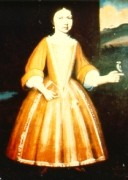

|
by Stefan Bielinski Sara Gansevoort was born in 1718 the third of ten children of Catalina De Wandelaer - a Huguenot-ancestry Albany native, and Albany brewer Leendert Gansevoort. Sara's family lived in a home near Leendert's riverside brewery on the Market Street location that would remain a Gansevoort family landmark for many years. As the eldest daughter, Sara was expected to care for her younger siblings. Although her family was only slightly more affluent than their neighbors, Sara's portrait was painted by limner Nehemiah Partridge. Sara Gansevoort's sad story is further dramatized in an essay written in 1986 by Colonial Albany Project Associate Shirley Rice.
Limner portrait (painted during the 1720s) by itinerent artist Nehemiah Partridge (died 1737) in the collection of the Albany Institute of History and Art. Partridge also painted Sara's parents and a number of other early Albany people. For more information on the Gansevoort family, Alice P. Kenney's The Gansevoorts of Albany: Dutch Patricians in the Upper Hudson Valley (Syracuse, 1969) is an engaging yet definitive family history based on the lifelong scholarship of a pre-eminent historian of the Albany Dutch. Alice Kenney graduated from Albany High School and was trained in history at Columbia University. She published several important works on her ancestors. Her ability to comprehend previously untapped research resources and then present her findings in readable form helped inspire the "people's history" approach adopted by the Colonial Albany Social History Project. Prior to her death in 1985, she offered frequent and much appreciated suggestions that helped shape the project's evolving approach to the early Albany past. Many years earlier, Alice had dreamed of a comprehensive archive of biographical and cultural materials on the early settlers of Albany. |